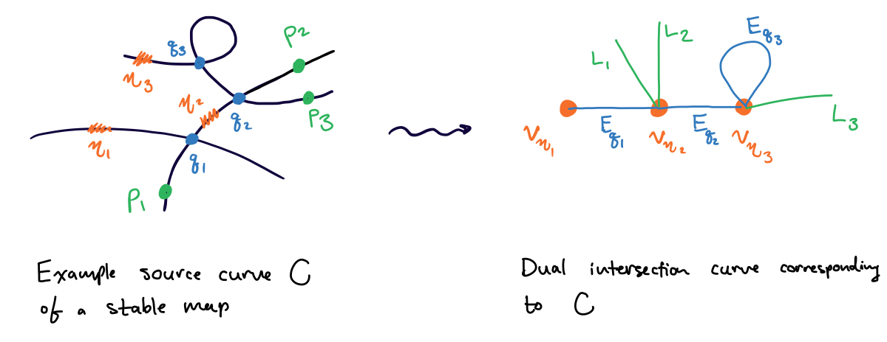

Definition
Let \((C, \mathbf p, f)\) be a stable map. Then the dual intersection graph \(G = G_C\) of \((C/S, \mathbf p, f)\) is a graph consisting of vertices \(V(G)\), edges \(E(G)\) and half-edges or legs \(L(G)\) (unbounded edges, edges connected to only one vertex) obtained in the following way:
- One vertex \(v_\eta\) for each generic point \(\eta \in C\) (one vertex per irreducible component)
- An edge \(E_q \in E(G)\) joining \(v_{\eta_1}\) and \(v_{\eta_2}\) whenever there is a node \(q\) contained in the closures of both \(\eta_1\) and \(\eta_2\). We allow \(\eta_1 = \eta_2\), i.e. \(E_q\) is a loop if \(q\) is a self-node.
- A leg \(L_p\) with endpoint \(v_{\eta}\) for each marked point \(p\) in the closure of \(\eta\).
Occassionally we view \(V(G), E(G)\) and \(L(G)\) as subsets of \(C\) and write \(x \in G\) to mean a point of \(C\) which is either a node, a mark or a generic point.
Note that the dual intersection graph does not depend on the data of \(f\) at all, only that of the source curve \(C\) and the marked points \(\mathbf p\).
